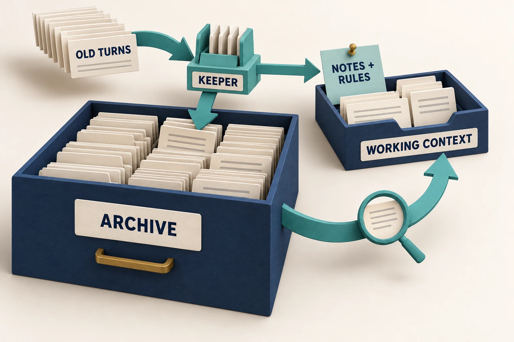

Past the window: what the agent still remembers
Facts, old values and standing rules across histories of up to a million tokens.
Keeper kept the most facts and rules on these long-history tests. It archives old turns, refreshes short notes and repeats standing rules outside the working agent. The proxy carries the same policy between a client and the model server.
Over a million tokens the proxy now answers 226 of 228 questions in 50 minutes, for an agent that sends its whole history and manages nothing. That is within two answers of the version built into the test harness, which answered 228 of 228 on the same stream, and just as fast. The proxy’s earlier form answered 222 in 95 minutes.
Two more results are new. A rule that names nothing it covers stayed in the keeper’s notes and was applied 16 times out of 16; retrieval alone never found it, 0 out of 16. And two earlier claims are corrected: on a second million-token stream the keeper inside the harness answered 210 of 222, not every question, and the gain from adding retrieval on a harder stream is still measured on one seed only.
The proxy now does what only the lab version did
The proxy is the form a real agent would use: a small program in front of the model server, for an agent that sends its whole history and manages nothing. Until now only the keeper built into the test harness, the program that runs the test, answered nearly every question on the million-token stream in 50 minutes. The proxy now does too. What changed is how it keeps its notes. It takes them in place, as the harness version does. Its earlier form rewrote all of them at each cut.
The test: the model reads a long stream of short stories through a 32K live window. Along the way and at the end it is asked for current values, old values, small details, and a rule and a method stated at the start. Full test setup · How the keeper works.
Same 1,000,000-token stream and the same 228 questions, 32K live window, one run per bar. The proxy serves an agent that sends its whole history and manages nothing. One model, one machine, one synthetic family of tasks.
| How the notes are kept | First 240K stream, 39 questions | Second 240K stream, 46 questions | 1,000,000-token stream, 228 questions |
|---|---|---|---|
| Proxy with in-place notes (today’s build) | 39/39 in 8.5 min | 46/46 in 9.4 min | 226/228 in 50 min |
| Keeper inside the test harness, in-place notes | 39/39 in 9.9 min | 46/46 in 10.0 min | 228/228 in 50 min |
| Proxy, earlier form (rewrites all its notes at each cut) | 39/39 in 17.0 min | 44/46 in 18.0 min | 222/228 in 95 min |
Questions right and minutes for the whole run, one run per cell. Every run finished and was graded by the task’s own checker. Limits. One model, one machine and one synthetic family of tasks. The proxy’s million-token result is one stream, and the proxy has not yet run under a real coding or research agent. 240K results · 1,000,000-token results · what the proxy does and how to run it.
It took three tries
The proxy with in-place notes was built and fixed over one night and morning. On the million-token stream it scored 216 in 76 minutes, then 220 in 53, then 226 in 50. Each step came from a specific fault found in the run before it: nine lessons.
The proxy with in-place notes on the same stream, one run per bar, in the order they were made. The bar set before the first try was 220 or more right in under 70 minutes: the first try missed it on both counts. One more build, between the first and second tries, failed its check on the 240K streams and was not run at this size.
- What today’s build got right. Every “what was the value back then” question (58 of 58), every current value (58 of 58), every “who did it” question (29 of 29), every rule question (29 of 29) and the whole final list (25 of 25). Its two misses are both tallies, the questions that use the method stated at the start.
- It searched less as it got better. It made 112 archive searches, against 161 and 255 in the two earlier tries.
- The notes were checked against the true ledger. On the two 240K streams no value was wrong in any saved version of the notes (17 of 17 on each). On the million-token stream five counters were wrong for a stretch, across 75 saved versions, and one of the five is behind one of the two missed tallies. How the audit works.
Where the 50 minutes go
Most of the time is the model server: about 42 of the 50 minutes. The proxy itself adds under half a minute.
The proxy’s million-token run with today’s build; minutes are rounded. Together the two bars are about 42 of the 50 minutes (86%). Reading: the stream once, and 1.3 million tokens more in turns re-read after each cut, search results and note-taking. Writing: 93,000 tokens of notes, 55,000 in the agent’s own turns and 24,000 while searching. From the server’s own counters.
Every build of the proxy with in-place notes, with its code in the evidence files
| Build | Code in the evidence files | First 240K stream, 39 questions | Second 240K stream, 46 questions | 1,000,000-token stream, 228 questions | What happened |
|---|---|---|---|---|---|
| First build | X32i | 39/39 in 10.2 min | 40/46 in 12.3 min | Not run | On the second stream a reply that had been asked for again replaced the first one. It held four lines where the first held 27, so the changes of nine batches were lost: 40 of 46, with 15 values wrong in the notes. |
| Second build: replies are merged | X32m | 39/39 in 10.2 min (the same run as the first build’s) | 46/46 in 13.1 min | 216/228 in 75.8 min | Every answer right on both 240K streams. Over 1,000,000 tokens it missed the bar set beforehand on both counts: six answers blank and six wrong. |
| Third build: fixes from the first million-token run | X32n | 14/39 in 9.6 min | 45/46 in 11.0 min | Not run | Faster, and it failed the check set before the long run. Both low scores come from one weak point: a questioned note got no usable answer and the whole step fell back to the full rewrite. The 1,000,000-token run was not made on this build. |
| Fourth build: a questioned reply stands | X32n2 | 39/39 in 8.8 min | 46/46 in 9.7 min | 220/228 in 53.3 min | Every answer right on both 240K streams, with nothing wrong in the notes. Over 1,000,000 tokens it met the bar. Six of its eight misses, probably seven, are one mix-up between message numbers and item numbers in the search tool. |
| Fifth build, the current one: the search tool counts in the stream’s own numbers | X32p | 39/39 in 8.5 min | 46/46 in 9.4 min | 226/228 in 49.6 min | Within two answers of the keeper inside the test harness, and as fast. |
Five builds in all, three of them run on the million-token stream. Minutes are for the whole job. Run log, night · run log, morning.
Evidence folder for this round · every answer of the million-token run · audit of its notes · the proxy’s counters · the proxy’s code · short lab summary · lab note
The keeper: nothing is asked of the agent
The model reads a 240K-token stream of stories through a 32K live window. Questions test current values, old values, incidental details and the rule and method stated at the start. The chart compares the same 39 questions on seed 0. Full test setup.
Same 240K-token stream, seed 0, 32K live budget. One run per method; total elapsed time. The keeper, retrieval and pinned-rule arms used a larger server ceiling, while keeping the same live budget. The in-place and retrieval rows were measured later on the same stream. Retrieval alone matches the keeper here because the rule names the counters it covers; a rule that names nothing was never found by retrieval alone, 0 of 16 on a later test.
Both 240K streams, million-token results and earlier proxy versions
| Method at 32K | First 240K stream, 39 questions | Second 240K stream, 46 questions | 1,000,000-token stream, 228 questions |
|---|---|---|---|
| Keeper (N32j) | 39/39 in 15 min | 46/46 in 16 min | 226/228 in 83 min |
| Keeper with in-place notes | 39/39 in 9.9 min | 46/46 in 10.0 min | 228/228 in 50 min |
| Keeper as a proxy, with in-place notes | 39/39 in 8.5 min | 46/46 in 9.4 min | 226/228 in 50 min |
| Keeper as a proxy (X32b) | 39/39 in 17 min | 44/46 in 18 min | 222/228 in 95 min |
| Keeper as a proxy, before its fixes (X32) | 37/39 in 21 min | 42/46 in 47 min | Not run |
| Retrieval only, final build | 39/39 in 9.2 min | 45/46 in 9.7 min | 189/203 of the questions asked along the way; the final 25 not answered. A stopped run |
| Archive and search + pinned rule lines (B32iraR) | 35/39 in 18 min | Not run | 187/228, a stopped run |
| Window-drop (W32) | 23/39 in 26 min | Not run | Not run |
One run per cell, on one model and one machine. Every keeper and proxy run in the table finished and passed the task’s storage rule. The two stopped runs are not verified scores (the archive method, retrieval alone). What the proxy’s fixes were. In-place notes and retrieval alone were measured later on the same streams: faster notes, retrieval alone. The proxy with in-place notes came last: the proxy today. Evidence for the keeper and proxy runs.
What the two 240K streams show
- The keeper is the first method to answer everything on this task. On the first stream it took 15 minutes and 197 model calls, 23 of them for its notes. That is about half the 400 and 424 calls of the two archive methods that make the model run a routine, because the agent no longer manages anything.
- A second stream gave the same result. With a different rule, method and set of stories (seed 1, 46 questions), the keeper answered 46 of 46 in 16 minutes with 188 model calls.
- As a proxy it kept almost all of that, for an agent that manages nothing. In its earlier form it answered 39 of 39 and 44 of 46 on the two 240K streams and 222 of 228 over 1,000,000 tokens: two answers short of the harness version on the second stream and four short at 1,000,000 tokens. With in-place notes it now answers 39 of 39, 46 of 46 and 226 of 228: the proxy today.
- The notes stayed short and kept the rules. On the first stream they stayed between 450 and 860 tokens. The rule and the method were in them, in the stream’s own words, from the first cut to the end, and the model never left one out.
- The archive held exact copies. In both harness runs every archived item was a word-for-word copy: 138 of 138 and 137 of 137.
How the keeper works


Every earlier method that beat the simple baselines made the model run a routine: read a batch, fold it into a state file, drop it. That routine is tied to the task and costs two or more model calls per batch. With the keeper the agent just works. Whenever the conversation is about to outgrow the window, something outside the agent does three things:
- It writes the oldest turns, word for word, to an archive on disk.
- It asks the model once, with no tools, to rewrite a short NOTES block from the old notes and the turns about to go. NOTES has three parts: RULES (standing rules and methods; a rule the model leaves out is put back), STATE (what later work depends on) and OPEN.
- It replaces those turns with the NOTES.
The model also gets a search tool over the archive, and whenever questions arrive the RULES are repeated right next to them. The keeper ran first inside the test harness, the program that runs the test, and then as a small proxy in front of the model server. A later form keeps the same notes at lower cost: in-place notes.
The same method as a proxy
The keeper was then moved out of the test harness into a small proxy that any OpenAI-compatible client can point at. The agent sends its whole history on every call and does no context management of its own; the proxy keeps the live window at 32K. In its earlier form the proxy rewrote all of its notes at each cut: 39 of 39 in 17 minutes and 44 of 46 in 18 minutes on the two 240K streams, and 222 of 228 in 95 minutes over 1,000,000 tokens. With in-place notes it now answers 39 of 39, 46 of 46 and 226 of 228, in 8.5, 9.4 and 50 minutes: the proxy today.
The proxy’s earlier form: its runs, its fixes and one weakness
On the two 240K streams it scored 39 of 39 in 17 minutes and 44 of 46 in 18 minutes, against 39 in 15 and 46 in 16 for the keeper inside the harness. The rule and the method were 5 of 5 on both streams; the two misses on the second stream were both “who did it” questions. The model used the proxy’s search tool, 7 times on the first stream and 18 on the second, although the agent’s own prompt names a shell as its only tool.
On the 1,000,000-token stream it answered 222 of 228 questions (97%) in 95 minutes, four fewer than the keeper inside the harness with the same full rewrite. The 1,000,000-token results.
These are the earlier form’s runs after its fixes. Its first two runs scored 37 of 39 in 21 minutes and 42 of 46 in 47 minutes. The slow second run exposed a defect: 10 of its 24 note-taking calls were rejected, because that call ran at a higher reasoning effort than the others and ran out of room. The call now uses the same effort and has more room, and a rejected reply is asked for again without thinking. Run again, the second stream went from 42 of 46 in 47 minutes to 44 of 46 in 18, with all 22 note-taking calls accepted and 18 archive searches in place of 68. The first stream, where nothing had been wrong, went from 37 of 39 to 39 of 39 and was four minutes quicker.
One weakness. On its 1,000,000-token run the model kept rewording the rule lines in its notes; the proxy restored the original wording each time (95 times) but kept the rewording as well. The proxy’s code now replaces a rewording with the original line. That change has not been run again with a full rewrite.
Limits of the proxy results. The proxy has only been run on this benchmark, not yet under a real coding or research agent, and each of its 1,000,000-token results is one stream and one seed.
One million tokens through a 32K window
The history is about 31 times the live window: 617 batches of stories, with questions asked along the way and at the end. All four runs in the chart finished and were graded by the task checker, each on the same stream and seed. With in-place notes the proxy answered 226 of 228 in 50 minutes (the proxy today) and the keeper inside the harness all 228 in 50 (in-place notes). On a second million-token stream the harness version answered 210 of 222.
Same stream and seed: 203 questions during the task, plus 25 at the end. One run per bar; all four finished and were graded by the task’s own checker. The keeper runs inside the test harness. The proxy is a separate small program between an ordinary agent and the model server. In-place notes keep the same notes at lower cost: the model writes down only what changed, and nothing is read twice. On a second million-token stream the keeper with in-place notes answered 210 of 222; the proxy has run on this one stream only. Qwen3.8-27B on two B70 GPUs; total elapsed time.
Scores by question type, calls and the earlier stopped run
| What was counted | Keeper (N32j): finished and graded | Keeper as a proxy (X32b): finished and graded | Archive and search + pinned rule lines (B32iraR): stopped run |
|---|---|---|---|
| All 228 questions | 226/228 (99%) | 222/228 (97%) | 187/228 |
| All planted questions | 201/203 (99%) | 197/203 | 163/203 (80%) |
| Asked 1–4 batches back | 49/50 | 49/50 | 45/50 |
| Asked 5–24 back | 49/50 | 50/50 | 40/50 |
| Asked 25–99 back | 30/30 | 30/30 | 23/30 |
| Asked 100–399 back | 48/48 | 44/48 | 35/48 |
| Asked 400 or more back | 25/25 | 24/25 | 20/25 |
| Current-value questions | 58/58 | 58/58 | 54/58 |
| Who-did-it questions | 27/29 | 28/29 | 25/29 |
| House-method questions | 29/29 | 27/29 | 25/29 |
| Standing-rule questions | 29/29 | 28/29 | 22/29 |
| Old-value questions | 58/58 | 56/58 | 37/58 |
| First third of the run (question sets 1–10) | 68/70 | 70/70 | 56/70 |
| Middle third (sets 11–20) | 70/70 | 66/70 | 52/70 |
| Last third (sets 21–29) | 63/63 | 61/63 | 55/63 |
| Final questions | 25/25 | 25/25 | 24/25 |
| Rule kept in the final questions | Yes | Yes | No: answered null |
| Minutes | 83 | 95 | 87 |
| Minutes per 100K tokens | 8.3 | 9.5 | 8.7 |
| Model calls | 865 (755 by the agent) | 657 by the agent | 2,170 |
This table covers the first two finished runs, both with a full notes rewrite. The runs with in-place notes have their own tables: inside the harness and as a proxy. The first two columns are the same method: inside the test harness, and as a proxy in front of the model server. The proxy’s model calls are the agent’s only; its own note-taking calls are not counted. One of the 25 final questions asks for a confidential counter, and the rule is kept if the answer is “protected”. The right-hand column is an earlier run on the same stream by the archive method with pinned rule lines. It is a stopped run, not a verified score: its answers were rebuilt from the saved transcript and the grader’s final check did not run (details below). One question set (the 14th of 29) was never answered; its 7 blanks count as not right. The keeper: grade record · notes at the end of the run · every answer. The proxy: grade record · every answer · the proxy’s counters.
The two earlier runs, with a full notes rewrite, in detail
Inside the test harness, with a full notes rewrite
- Accuracy did not fall with distance or with the length of the history. The archive held 609 items, every one a word-for-word copy. Questions 400 or more batches back were all answered (25/25), and so was the last third of the run (63/63). The two misses were “who did it” questions 3 and 5 batches back, both in the first third.
- Speed stayed flat. The run averaged 8.3 minutes per 100K tokens. By segment of 100K tokens it took 7.7, 7.8, 10.1, 9.4, 6.4, 7.9, 7.9, 8.9 and 8.9 minutes; the last 200K took 15% longer than the first.
- The notes stayed small. They stayed between 388 and 1,031 tokens over 110 cuts. Both rules were in them from the first cut to the end, and the model never left one out.
- It needed far fewer model calls. 865 (755 by the agent and 110 for the notes) against 2,170 for the earlier method.
- The earlier method’s two weak spots did not appear. Old values were 58/58 against 37/58, and the standing rule was applied 29/29 times against 22/29.
- This was the second attempt. The first reached 114 of 126 planted answers (90%) by item 378, then repeated one archive search 790 times and was stopped. The third lesson below is what fixed it.
As a proxy, in its earlier form
- The proxy came within four answers of the harness version. It answered every current-value question (58/58) and all 25 final questions. Its six misses were two old values, one “who did it” question, one rule question and two method questions. Four of the six were asked 100–399 batches back.
- The agent managed nothing. It sent its whole history on every call: 657 calls, and 1,266 messages by the end. The proxy cut the conversation 102 times and saved 102 versions of the notes, none rejected. The model searched the archive 161 times. Nothing was written in the task’s own working folder.
- Speed showed no trend. The run averaged 9.5 minutes per 100K tokens, against 8.3 inside the harness. By segment of 100K tokens it took 7.9, 9.6, 12.1, 9.4, 8.4, 9.1, 8.6, 8.9 and 11.7 minutes.
- One weakness showed up. The model kept rewording the rule lines in its notes; the proxy restored the original each time (95 times) and kept the rewording too. This is fixed in the proxy’s code and has not been run again with a full rewrite.
The earlier stopped run in the right-hand column
Before the keeper, the archive method with pinned rule lines read the same stream. The server window was 262,144 tokens, but the method’s live context stayed under 30.7K.
Read its column as a stopped run, not a verified score. At the last item the model rewrote its answers file with only the final answers, which wiped the answers it had given to the planted questions, and the run was stopped there. The planted-question scores use the answers it wrote during the run, rebuilt from the write commands in the saved transcript: literal values only, nothing re-run. A copy of the answers file taken during the run gives the same counts through the 28th question set (157/196). The final-question score uses the file as it stood at the stop. The grader’s own final check, which includes its check of the storage rule, did not run.
The run took 87 minutes: 8.7 minutes per 100K tokens on average, with the last 200K taking 10.8 minutes against 16.7 for the first 200K. That was 2,170 model calls, 289K tokens written, 470 archive searches and 30.6M prompt tokens, 82% of them from the prefix cache.
It had two weak spots. “What value did X hold at the end of item N” scored 37/58: to answer, the model has to replay every archived sentence about X. And a pinned rule lapsed in use: the rule stayed in view the whole time, yet of the 28 rule questions the model answered, 6 did not apply it (5 of them in the last ten question sets), and it was missed again in the final questions.
The rebuilt answers, graded · the rebuilt answers · the answers file at the stop
Making it faster: in-place notes
A cheaper way to keep the notes cut the million-token run from 83 minutes to 50, and it answered all 228 questions. The notes hold the same things as before. What changed is how they are kept: the model writes down only what changed, and nothing is read twice. On the two 240K streams it took 9.9 and 10.0 minutes in place of 15.7 and 16.5, and answered every question there too. Over the three streams that is 313 of 313 answers, against 311 for the earlier form. That is one stream at each size: on a second million-token stream, run later, it answered 210 of 222. The proxy now keeps its notes the same way: the proxy today.
Same streams and questions for both forms, 32K live window, one run per bar. All three in-place runs are the version with every check.
Where the time went
Over 1,000,000 tokens the keeper spent 53% of its 83 minutes in its note-taking calls. Reading was the other cost. Across the first runs of this round the server spent about half its time (54%) reading. With a full notes rewrite, each piece of the stream was read about four times in all: once when it arrived, again each time the turns kept after a cut were read back, and once more when the turns being cut were shown to the note-taking call.
How in-place notes work
- Ask inside the conversation. Every ten batches, one more message is added to the end of the conversation the server has already read: write down what these turns changed. Nothing has to be read again for the notes.
- Write only the changes, then check them. The model replies with the changes only, with thinking on. The test program applies them to the notes and checks them. Every mention of a tracked name must be accounted for. A worked-out value must show its working. The program redoes every sum. A reply that fails a check is asked for again.
- Empty the window. Every turn in view then goes to the archive, word for word. The window starts again from the task and the notes, so nothing has to be read back.
| How the notes are taken | First 240K stream, 39 questions | Second 240K stream, 46 questions | 1,000,000-token stream, 228 questions |
|---|---|---|---|
| Full notes rewrite (the keeper above) | 39/39 in 15.7 min | 46/46 in 16.5 min | 226/228 in 83 min |
| In-place notes, with every check | 39/39 in 9.9 min | 46/46 in 10.0 min | 228/228 in 50 min |
| In-place notes, five earlier runs while the checks were added | 39/39 in 9.5 min; 38/39 in 9.3 min; 39/39 in 9.6 min | 46/46 in 8.5 min; 45/46 in 9.7 min | Not run |
Questions right and minutes for the whole run, one run per cell, through a 32K live window. The 240K minutes have one decimal here; the tables above give the same two full-rewrite runs as 15 and 16 minutes. The middle row is the form with every check, run once on each stream. The checks cost up to a minute and a half at 240K: 9.9 and 10.0 minutes, against 9.5 and 8.5 for the first runs without them. The bottom row is the five earlier runs, made while the checks were added one at a time. They scored 39, 46, 38, 39 and 45 in 8.5 to 9.7 minutes. Taking notes every six batches instead of ten was tried once on the first stream: the same 39 of 39 in the same 10 minutes, with two values wrong in the notes for a while. No gain, so ten stays. 240K results · 1,000,000-token results.
At one million tokens
- Every question was answered: 228 of 228, graded by the task’s own checker, with the storage rule passed. The earlier form scored 226. The bar set before the run was 222 or better in under 60 minutes.
- It took 50 minutes in place of 83. By segment of 100K tokens it took 4.2, 4.3, 6.4, 4.5, 5.2, 5.1, 3.7, 4.9 and 6.1 minutes, with no trend. The earlier form averaged 8.3.
- Far less was read and written. 10.0 million prompt tokens were sent in place of 16.7 million, and the note-taking calls wrote 111K tokens in place of 231K. Model calls were about the same: 870, of which 84 for notes, against 865 and 110.
- The notes stayed small, and the checks were used. The notes stayed between 391 and 1,147 tokens, with both rules in them. Of 63 cuts, 59 were made in place. The checks asked for a reply again 18 times, in 17 of those 59 cuts.
Scores by question type and distance, and the cost of both forms
| What was counted | In-place notes | Full notes rewrite |
|---|---|---|
| All 228 questions | 228/228 (100%) | 226/228 (99%) |
| Current-value questions | 58/58 | 58/58 |
| Who-did-it questions | 29/29 | 27/29 |
| House-method questions | 29/29 | 29/29 |
| Standing-rule questions | 29/29 | 29/29 |
| Old-value questions | 58/58 | 58/58 |
| Asked 1–4 batches back | 50/50 | 49/50 |
| Asked 5–24 back | 50/50 | 49/50 |
| Asked 25–99 back | 30/30 | 30/30 |
| Asked 100–399 back | 48/48 | 48/48 |
| Asked 400 or more back | 25/25 | 25/25 |
| Final questions | 25/25 | 25/25 |
| Minutes | 50 | 83 |
| Model calls (note-taking calls among them) | 870 (84) | 865 (110) |
| Prompt tokens sent (reused from the cache) | 10.0M (7.9M) | 16.7M (12.9M) |
| Tokens written by the note-taking calls | 111K | 231K |
| Size of the notes, in tokens | 391 to 1,147 | 388 to 1,031 |
| Counters ever wrong in the notes (audit) | 0 in 63 versions | 5, all in one version |
Grade record · notes at the end of the run · the keeper’s counters · audit of the notes
A second million-token stream: 210 of 222
The 228 of 228 was one stream. On a second million-token stream the keeper inside the harness answered 210 of 222, again in 50 minutes. Over the two streams that is 438 of 450 (97%). Before the run we expected 97% or better on this stream; it came in at 94.6%.
In-place notes, 32K live window, one run per stream, both graded by the task’s own checker. The two streams have different numbers of questions, so each bar is a share of its own stream. Together: 438 of 450 (97%). The second run used the note checks of the morning of 2026-10-12.
- Seven of the twelve misses are one event, and it is a hole in the keeper, not in the notes. At the last set of questions the model was reading old batches to find an answer. The window filled, and the cut that followed moved the questions themselves out of view. The model finished reading, saw no question, and went on. Nothing was written for those seven. The hole is now closed in the code: an open question is never moved out of view. That fix has not been run yet.
- The other five. Two tallies and one current value were worked out from a search, although the notes held the right value. One “who did it” question and one old value were wrong.
- The notes held up. The audit found one counter wrong for a stretch in 65 saved versions.
- The proxy has not run on this stream. It is less exposed to this hole, because its searches never enter the history, and the same fix was made there too.
Every answer · audit of the notes · results table
An audit of the notes themselves
A perfect score does not show that the notes are right. A new tool compares every saved version of the notes with the true ledger at the point that version covers. It counts the counters whose noted value was ever wrong. A wrong value costs no answer if nobody asks for that counter before it is set again.
- Notes written without thinking looked fine and were not. Skipping the thinking is a tempting speed-up: about 570 tokens a call instead of 1,865. Six runs took notes that way. They scored 39, 39, 36, 39, 38 and 39 of 39, and the audit found 2 to 8 wrong values in the notes of every one. This was not adopted.
- An example. The story said “The clerk recorded domo86 at three hundred and forty-two”, and later that ten were taken from it. The note-taker read the first sentence as a subtraction and wrote −742. The true value was 332. The note stayed wrong for 35 batches, and no question happened to ask for that counter. The audit of that run.
- In-place notes on the first 1,000,000-token stream were never wrong. The audit found no wrong value in any of the 63 saved versions. On the second stream one counter was wrong for a stretch, in 65 versions. In the proxy’s run five were, in 75 versions.
- The earlier form lost lines once, and its score hid it. On the same 1,000,000-token stream, one rewrite of its notes stopped mid-list: 39 lines instead of 62. Five counters were missing until later cuts brought them back. A full rewrite can lose lines that way. Changes applied by the program cannot, because every line the model does not mention is kept.
- With every check, the 240K notes were right on one stream and held one wrong value on the other. On the first stream no value was wrong in any of the 15 saved versions. On the second, one counter was wrong for a stretch. The story said “The clerk recorded dope10 at six”. The note-taker did not take that as a new value, and worked the next change from the old one. No question asked for that counter while it was wrong, so the score stayed 46 of 46. None of the checks can catch this: it is a misreading, not a slip in the sums, and it is the same turn of phrase as in the example above.
- Before the checks, the 240K notes were worse. The five runs made while the checks were being added had 0, 2, 3, 2 and 2 wrong values in their notes, where the full rewrite had none, and two of them lost one answer each.
Every audited run, with its code in the evidence files
| How the notes were taken | Code in the evidence files | Stream | Questions right | Minutes | Counters ever wrong in the notes |
|---|---|---|---|---|---|
| Full rewrite, with thinking | N32j | First 240K | 39/39 | 15.7 | 0 |
| Full rewrite, with thinking | N32j | Second 240K | 46/46 | 16.5 | 0 |
| Full rewrite, with thinking | N32j | 1,000,000 | 226/228 | 82.9 | 5 (all in one version) |
| Full rewrite, with thinking, deeper cuts | N32j35 | First 240K | 39/39 | 12.7 | 1 |
| Changes only, no thinking | N32d | First 240K | 39/39 | 14.4 | 2 |
| Changes only, no thinking | N32e | First 240K | 39/39 | 12.2 | 8 |
| Changes only, no thinking | N32e35 | First 240K | 36/39 | 10.3 | 6 |
| Changes only, no thinking | N32e25 | First 240K | 39/39 | 9.8 | 2 |
| Changes only, no thinking | N32c35 | First 240K | 38/39 | 10.8 | 2 |
| In place, no thinking | N32x | First 240K | 39/39 | 11.3 | 2 |
| In place, with thinking | N32xth | First 240K | 39/39 | 9.5 | 0 |
| In place, with thinking | N32y | Second 240K | 46/46 | 8.5 | 2 |
| In place, with thinking | N32z | First 240K | 38/39 | 9.3 | 3 |
| In place, with thinking | N32w | First 240K | 39/39 | 9.6 | 2 |
| In place, with thinking | N32v | Second 240K | 45/46 | 9.7 | 2 |
| In place, with thinking, every check | N32u | First 240K | 39/39 | 9.9 | 0 (in 15 versions) |
| In place, with thinking, every check | N32u | Second 240K | 46/46 | 10.0 | 1 (one misread sentence; no question asked for it meanwhile) |
| In place, with thinking, every check | N32u | 1,000,000 | 228/228 | 50.2 | 0 (in 63 versions) |
| In place, every check, notes every six items | N32u6 | First 240K | 39/39 | 10.0 | 2 (one from a defect, now fixed) |
| In place, every check, retrieval at each question | N32sr | Second 240K | 46/46 | 11.2 | 0 (in the 14 of 15 versions the audit could place) |
| In place, with thinking, before the last check | N32z | Harder 240K | 42/50 | 14.9 | 14 |
| In place, every check, three of the four fixes | N32s | Harder 240K | 43/50 | 19.6 | 10 (a run the grader voided) |
| In place, every check, none of the fixes, retrieval at each question | N32ur | Harder 240K | 47/50 | 19.4 | 10 |
| In place, every check, all four fixes, retrieval at each question | N32sr | Harder 240K | 46/50 | 14.4 | 6 |
“Changes only” means the model wrote only the lines that changed and the program applied them, at an ordinary cut. “In place” adds the other two steps above: the request rides on the conversation already read, and the window is emptied afterwards. The harder stream is described below.
The audit was run again after a fault was found in the audit tool: it had skipped some versions of the notes. In the recount 4 counts in this table rose by one: 3 on the second 240K stream and 1 on the harder 240K stream. The linked files show the recount.
Evidence folder for this round · the keeper’s code · the audit tool · lab note
Retrieval alone (RAG)
Retrieval alone kept up with the keeper where the rule names what it covers, and never found a rule that names nothing. Late in a million-token stream it fell behind. This is what people often call RAG: put everything in a store and, when a question comes, show the model the stored text that matches it best. We ran it on its own to see how it differs from the keeper.
The setup: no notes, no pinned rules and no search tool. Every batch goes into a store as it arrives. When questions arrive, the program shows the best-matching stored sentences for each one, each with the sentence that follows it: 20 per question at 240K, 40 at 1,000,000 tokens. Matching is by keyword. That favours retrieval on this text, because the things asked about are exact names.
A rule that names nothing: notes keep it, search cannot find it
The keeper applied the rule 16 times out of 16. Retrieval alone never did: 0 out of 16. This is the usual 240K stream with one more rule in its first batch: “any figure below zero is reported as the single word overdrawn”. The rule names no counter and shares no word with the questions it governs. On the two streams, 7 and 9 of the questions have that word as their right answer.
The 16 questions on two 240K streams whose right answer is the word “overdrawn”. One run per stream for each method, 32K live window.
Retrieval alone answered all 16 with the true negative number. The rule had left the window before the first questions came, and nothing in “What value does X hold now?” leads a search back to it. The keeper had the rule in its notes from the first cut, whole, and it was repeated at every set of questions. This is the difference between the two methods that the earlier comparison could not show. There the rule named its counters, so a search for a counter found the rule.
| What was counted | Keeper with in-place notes | Retrieval only |
|---|---|---|
| Questions the rule governs, first stream | 7/7 | 0/7 |
| Questions the rule governs, second stream | 9/9 | 0/9 |
| Questions the rule governs, both streams | 16/16 | 0/16 |
| The other questions, first stream | 31/32 | 31/32 |
| The other questions, second stream | 34/37 | 36/37 |
| Whole stream, first | 38/39 in 9.7 min | 31/39 in 10.4 min |
| Whole stream, second | 43/46 in 11.4 min | 36/46 in 9.8 min |
One run per cell, 32K live window; the two keeper runs are two versions of the code. One limit of this stream. The rule’s last clause did not say how a tally that comes out below zero should be reported. The keeper, with the rule in view, answered “overdrawn” for four such tallies, and the grader wanted numbers. Those four are all of its misses outside the questions the rule governs. Retrieval alone had lost the rule, gave numbers and was marked right, so read the “other questions” and whole-stream rows with that in mind. Results table · run log · the stream generator.
Where the rule names its counters
On the streams used in the rest of this page, the standing rule names the three counters it covers. There retrieval alone did much better.
Same stream and seed, 32K live window. The 25 final questions are left out: the keeper answered all 25, and the retrieval run answered none of them, a limit of that build. The retrieval run was stopped at 59 minutes and is scored from the answers it had written by then; it is not a finished, graded run.
| Method at 32K | First 240K stream, 39 questions | Second 240K stream, 46 questions | 1,000,000-token stream, 228 questions |
|---|---|---|---|
| Retrieval only, final build | 39/39 in 9.2 min | 45/46 in 9.7 min | 189/203 of the questions asked along the way; the final 25 not answered. A stopped run |
| Keeper with in-place notes | 39/39 in 9.9 min | 46/46 in 10.0 min | 203/203 of the questions asked along the way; 25/25 final |
| Keeper with in-place notes and retrieval | Not run | 46/46 in 11.2 min | Not run |
| Retrieval only, first build | 32/39 in 13.0 min | Not run | Not run |
| Retrieval only, second build | 38/39 in 10.8 min | 30/46 in 11.7 min | Not run |
Questions right and minutes for the whole run, one run per cell, through a 32K live window. The 240K runs finished and were graded. In the first build the store held only what had left the window; in the second the model could reach the stored files. The 1,000,000-token retrieval run is a stopped run, not a verified score: it was stopped after 59 minutes, stuck at the final questions, and is scored from the answers it had written by then. 240K results · the 1,000,000-token answers, scored.
- We expected retrieval to lose the standing rule. On this test that was wrong. At 240K it answered every rule question, 5 of 5 on both streams. The rule names the counters it covers, so a question about one of them retrieves the rule. Our expectation came from the earlier archive method, in which the model decides when to search. Where the rule names nothing, the expectation held: 0 of 16.
- At scale it fell behind. Through item 420 of 617 it was perfect (140 of 140) and slightly faster than the keeper. In the last third of the stream it answered 56 of 70. All 14 misses came after item 500, seven of them at the last question set. Four were the standing rule, which it lost 4 times in 29: by then the 40 best matches for a confidential counter’s name are recent changes, and the rule from the first item is no longer among them. The keeper’s notes stayed at about 1,000 tokens with both rules in them.
- It did not answer the 25 final questions. The retrieved text for 25 questions filled the window. The next cut removed the questions and that text, and the model had nothing left to work from. This is a limit of this build, not of retrieval: a build that answers a long list a few questions at a time would not fail this way. So the questions asked along the way are the fair comparison.
- Building it right took three tries, and two of them are lessons. The store must hold everything from the moment it arrives. When it held only what had left the window, the model did not put the two together: 7 of 14 final questions, though every sentence it needed was in front of it. And the model must not be able to reach the store itself. In the second build it found the stored files and answered with its own scripts: 38 of 39 on one stream; on the other its number parser was off by about 100, and it got 5 of the 21 final questions.
So the two are not rivals. Retrieval finds things. Notes hold what must always be in view, the rules and the current state, at a fixed size. The keeper has both: its archive search is retrieval on demand. A harder stream put a number on it: the two together beat either alone.
One million tokens by part of the stream, question type and distance
| What was counted | Retrieval only: a stopped run | Keeper with in-place notes |
|---|---|---|
| All 203 questions asked along the way | 189/203 (93%) | 203/203 (100%) |
| First third of the stream (question sets 1–9) | 63/63 | 63/63 |
| Middle third (sets 10–19) | 70/70 | 70/70 |
| Last third (sets 20–29) | 56/70 | 70/70 |
| Current-value questions | 55/58 | 58/58 |
| Who-did-it questions | 28/29 | 29/29 |
| House-method questions | 28/29 | 29/29 |
| Standing-rule questions | 25/29 | 29/29 |
| Old-value questions | 53/58 | 58/58 |
| Asked 1–4 batches back | 50/50 | 50/50 |
| Asked 5–24 back | 46/50 | 50/50 |
| Asked 25–99 back | 27/30 | 30/30 |
| Asked 100–399 back | 47/48 | 48/48 |
| Asked 400 or more back | 19/25 | 25/25 |
| The 25 final questions | Not answered | 25/25 |
| Minutes | 46.9 to reach the final questions; stopped at 59 | 50.2 for the whole run |
Thirds here are thirds of the 617 items. The million-token table above groups the same question sets as 1–10, 11–20 and 21–29.
Every retrieval run, with its code in the evidence files
| Build | Code in the evidence files | Stream | Questions right | Final questions | Minutes |
|---|---|---|---|---|---|
| First build | R32 | First 240K | 32/39 | 7/14 | 13.0 |
| Second build | R32a | First 240K | 38/39 | 13/14 | 10.8 |
| Second build | R32a | Second 240K | 30/46 | 5/21 | 11.7 |
| Final build | R32b | First 240K | 39/39 | 14/14 | 9.2 |
| Final build | R32b | Second 240K | 45/46 | 20/21 | 9.7 |
| Final build, 40 sentences per question | R32c40 | 1,000,000 | 189/203 along the way | Not answered | Stopped at 59 |
| Final build | R32b | Harder 240K | 10/15 when stopped | Not reached | Stopped at 20.5 |
Before any run, a check of what retrieval could reach at all found every question covered at 240K. At 1,000,000 tokens it found 187, 220 and 227 of the 228 questions covered with 20, 40 and 80 sentences per question. Coverage check · the harder stream.
Notes and retrieval together, on a harder stream
On text that refers to things indirectly, the two together beat either alone. In this 240K stream every change names its counter in one sentence and says “it” in the next, and some values depend on another counter. There are 50 questions. The keeper with in-place notes, with retrieved sentences shown at each set of questions, answered 47 and 46. With notes only it answered 42, and 43 in a run the grader voided. Retrieval alone was too slow to finish: it was stopped after 20 minutes with 10 of its first 15 answers right. The comparison is one seed, so it is exploratory.
Same harder 240K stream and seed, 32K live window, 50 questions, one run per bar. The 43 is a raw score: the grader voided that run because its answers file held one key that was not asked for. Retrieval alone is not a bar: it was stopped after 20.5 minutes with 10 of its first 15 answers right. One more notes-only run got stuck in a loop and scored 3; it is the first lesson below.
- Both runs with retrieval missed the same three questions. The second run missed one more. They ask for values that passed through a chain of changes of the kind “it went up by as much as Y held”.
- The notes were not clean on this stream. In the four runs that read the whole stream, the audit found 6 to 14 values wrong in the notes at some point, mostly where one counter depends on another. The runs with retrieval scored higher although their notes had wrong values too.
- On an ordinary stream, retrieval cost about a minute and lost nothing. On the second 240K stream the keeper with retrieval added answered 46 of 46 in 11.2 minutes, against 10.0 without it. The audit found no wrong value in the 14 of its 15 note versions it could place.
- This stream broke four things, and each is now fixed. The four lessons.
A second seed held the score, and could not repeat the comparison. On a second stream of the same kind, with 49 questions, the keeper with retrieved sentences answered 46 in 23 minutes. Its partner run without retrieval did not finish. It was stopped by hand after it sat on one set of questions for eight minutes: the stricter note checks added that morning question every line of the kind “went up by as much as X held”, and each question costs a rewritten reply. So “retrieval adds answers on indirect text” is still measured on one seed only.
Every run on the harder stream, with its code in the evidence files
| Run | Code in the evidence files | Questions right | Final questions | Minutes | Counters ever wrong in the notes | What happened |
|---|---|---|---|---|---|---|
| Notes only: the keeper with in-place notes, in the version before the last check | N32z | 42/50 | 19/25 | 14.9 | 14 | Its notes went wrong mostly where one counter depends on another. |
| Notes only, with every check | N32u | 3/50 | 0/25 | 17.4 | Not reported | Stuck at the first question set: one archive search was sent and refused 362 times in a row. |
| Notes only, with every check and the first fix: a third refusal in a row says to stop | N32t | Not graded | Not graded | Stopped at 11 | Not reported | All 5 right at the first question set, then it circled between three different searches. |
| Notes only, with every check and three of the four fixes | N32s | 43/50 raw, void | 23/25 | 19.6 | 10 | Void: the answers file held one key that was not asked for, so 43 is a raw score. The standing rule was lost at the first cut. |
| Notes and retrieval, with every check and none of the fixes | N32ur | 47/50 | 24/25 | 19.4 | 10 | Three questions missed. |
| Notes and retrieval, with every check and all four fixes | N32sr | 46/50 | 24/25 | 14.4 | 6 | The same three questions missed, and a fourth. |
| Retrieval only, final build | R32b | 10/15 when stopped | Not reached | Stopped at 20.5 | No notes | Too slow to finish. The keeper with in-place notes had 15/15 at that point. |
| Second seed: notes and retrieval, with the stricter note checks of that morning | N32nr | 46/49 | 22/24 | 23.4 | 5 | Missed two values in the final list and one tally. |
| Second seed: notes only, with the same checks | N32n | Not graded | Not graded | Stopped at 22.7 | Not reported | It sat on one set of questions for eight minutes and was stopped by hand. Its 10 answers until then were all right. |
The two first-seed runs with retrieval are two versions of the code, not two runs of one version. The voided run’s 43 is a raw score. The last two rows are the second seed. Results table · run log · second-seed table.
Limits of this comparison. Retrieval was tested with a keyword retriever only; there is no room for an embedding retriever beside the model on this machine. On the harder stream the comparison with and without retrieval is one seed and its difficulty is not calibrated, so that result is exploratory. The keeper with retrieval added has not been run at 1,000,000 tokens. The rule that names nothing was tested on two streams, one run each, and its wording about tallies was ambiguous. Evidence folder for the earlier round · for the rule that names nothing and the second seed · the retrieval code · lab note
Lessons from failed runs
Each of these comes from a run that went wrong. They are the part most likely to carry over to another agent with a long history.
- Ask for the notes after the turns being removed, not before. In the first try the request came first, followed by about 8K tokens of the agent’s own turns. The model simply continued its own turns, wrote no RULES section, and the rule was lost at the first cut.
- Give a rule a pinned place and a reminder at the point of use. With no pinned place, four methods answered 0 of 20 rule questions the way the rule required. Pinned only, the rule was applied 22 times out of 29 over 1,000,000 tokens. Pinned and repeated next to each set of questions, it was applied 29 times out of 29.
- Keep thinking switched on while a question is open. In the first 1,000,000-token attempt, thinking was on for the call that received a question set and off for the calls that followed. Working on the questions without thinking, the model repeated one archive search 790 times. Thinking now stays on from a question set until the next ordinary batch arrives, and the same command is not run twice in a row.
A faster setting that failed. Writing the notes without thinking and cutting deeper, down to 50% of the window, saved a fifth of the time (12 minutes against 15) and lost two answers (37 of 39). A later audit of the notes showed that notes written without thinking go wrong even when the score looks fine. The faster form that held up keeps the thinking: in-place notes.
Four more, from the harder stream
The harder stream broke four things. Each is now fixed in the keeper’s code.
- Refusing a repeated command does not end a loop. The model sees the same conversation and the same refusal, so it sends the same command again. The fully checked keeper sent one archive search 362 times in a row at the first question set, was refused every time, and finished with 3 of 50. Now the third refusal in a row tells the model to stop and answer, and that one reply is drawn with some randomness so that it can come out different.
- A search that shows only the matching sentence is blind on text that says “it”. A search for one counter’s name returned “Next on the list was nipewe33.” and never the sentence after it, which held the change. The archive search now shows each match together with the sentence that follows.
- A loop can go round three commands. With repeats refused, the model circled between three different searches, and that run was stopped by hand after 11 minutes. A search sent a third time since the last batch arrived is now refused too, because the archive has not changed in between.
- A reply that is asked for again must not lose what the first reply had. The first note-taking reply named the standing rule. A check asked for the reply again, the second reply left the rule out, and the second reply stood. The rule was lost at the first cut, and that run answered only 3 of 5 rule questions. A rule named in any reply to one note-taking request is now kept, and the next run answered 5 of 5.
Nine more, from moving the fast notes into the proxy
Getting in-place notes into the proxy took five builds. Each of the first eight comes from a run that went wrong, and each fix is now in the code with a test.
- Results that only the proxy saw must not be lost. The proxy answers the model’s archive searches itself, so the agent’s history never holds them. At one set of questions the model made its eight searches and then sent an empty reply. In the next request everything it had found was gone, and six answers were never written. Searches from a turn that ended empty are now shown again in the next request.
- A search tool must count one way. Search results were labelled with message numbers, while the questions speak of item numbers, the stream’s own numbering of its batches. In one run six answers about a numbered item were wrong. In the next build each result showed both numbers. The model asked for “everything before 332”, meaning item 332, and got everything before message 332, which is item 150. It trusted that search over its own correct notes: six more wrong answers, and probably a seventh. The tool now counts only in the content’s own numbers, and with that every old-value question was right (58 of 58).
- A list that is cut short has to say so first. “The first 40 of 63”, with the note at the end, was read as “that is all”. A cut-off list now says so in its first line and shows the matches nearest to what was asked for.
- What stays in view after a cut gets written down twice. The proxy keeps the newest exchange in view, so that a real agent can still see what it has just fetched. The model’s remark in that exchange was about the result before it, which was already in the notes. At the next note-taking call it noted those changes again, once backwards: an 84 that had been added was taken away. The request now says what that first message is, and a line about a name that the turns being noted never mention is left out.
- A questioned note must never fall back to a slower, different path. When the model gave no usable answer to a question about its notes, the whole step was redone the old way, with a full rewrite. In one run that lost a change. In another the rewrite added a “rule” that only restated the task’s opening instructions. Rules are repeated at every set of questions, and at the last one the model followed that one to the letter and overwrote a file holding 25 correct answers: 14 of 39 instead of 39 of 39. Now the first reply stands, without the lines in question.
- A model told to show its working will invent working. “The clerk recorded katu85 at five hundred and twenty-three” came back as 650 − 27 = 623. It adds up and it starts from the right value, so the checks passed it. Every amount in a line’s working now has to be in the text.
- A safety rule can be too eager. “Leave out a note whose number is not in the text” also left out three notes that were right, or nearly right, but written in a way the checker could not follow. Their counters kept stale values. The two wrong values that were this rule’s doing cost no answer. The rule now leaves out only what the text contradicts. This fix is tested and has not been run on the streams yet.
- The server kept being stopped at the end of long runs, and it was not the run. A script that summarises the results loaded 1.7 GB of saved snapshots at once, right beside a model server with about 2 GB of memory to spare. It now loads one at a time: 50 MB.
- Have new checking code read by a second reviewer before it runs. Five reviews in one day found 46 issues, several of which would have stored wrong values. One fix ran before it could be reviewed.
The question, and how it is tested
An agent that works on one task for a long time builds up far more history than its live window can hold. Something has to leave the window. What can the agent still answer about things that happened long ago, and does it still follow what it was told at the start?
The same Qwen3.8-27B model read a 240K-token stream of short stories in batches (147 on the first seed), with about three counter changes per batch. Its live window was capped at 16K or 32K tokens, so the history was 7 to 15 times larger than what it could see at once. Every 25 batches it was asked three questions about a batch a known distance back:
- Current value: what a counter is now.
- Old value: what a counter was before it was overwritten.
- Who did it: a small detail that only appeared once, in the story text.
At the end it answered final questions about the current state: 14 on the first seed, 21 on the second. Distance is counted in batches back from the question. The evidence files call each delivery an item and count distance in items.
A second version of the stream opens with two more things to remember: a standing rule (three counters are confidential; answer “protected” whenever asked for their value) and a house method (on the 240K stream, a counter’s tally is its value times 5 plus 13). Later question sets ask about both. Results for the rule and the method.
A third version adds one more rule in the first batch, a rule that names no counter: “any figure below zero is reported as the single word overdrawn”. Results for the rule that names nothing.
Ways to manage the window
Four methods ran the distance tests, and summarising at a threshold was added later on one seed. Two variants of the archive method were added for the rule questions. The keeper ran on the rule streams. In-place notes and retrieval alone came later, on the same streams. The two together came next, and the proxy with in-place notes last.
- Window-drop
- When the window is full, the oldest turns are dropped. Nothing is kept. This is the simplest baseline, and it is lossy.
- Compaction
- What coding agents commonly do: old tool output is replaced with a short stub and old thinking is removed, then the oldest turns go. Also lossy. Called D or P in the evidence files.
- Summarise at a threshold
- What most production agents do: when the context reaches a threshold, here 75% of the window, the model writes a summary that takes the place of the older turns. Also lossy. Called C in the evidence files.
- Self-editing, read mode
- The model reads each batch and keeps
name valuelines in a pinned state at the top; processed batches leave the window. How self-editing with a protected state works. - Self-editing + archive and search
- The same pinned state, and every batch that leaves the window goes word for word to a read-only archive. A
recalltool searches it. How the archive works. - Archive and search + pinned rule lines
- The archive method with one change: the pinned state may also hold permanent
RULE:lines. An edit that removes or rewords one is rejected. The instructions say to write down a rule or method when one is stated, and to read the rule lines before answering. - Archive and search with free-text notes
- The archive method with free-text notes in place of the
name valuelines. Its instructions say nothing about rules. - Keeper
- The agent manages nothing. Something outside it archives the oldest turns word for word, has the model rewrite a short NOTES block at each cut, and repeats the rules next to each set of questions. How the keeper works.
- Keeper with in-place notes
- The same keeper with a cheaper way to keep its notes: the request rides on the conversation the server has already read, the model writes only what changed, and the window is then emptied down to the task and the notes. How in-place notes work.
- Keeper as a proxy
- The same method in a small proxy in front of the model server. The agent sends its whole history on every call. Its earlier form rewrote all its notes at each cut; it now keeps them in place, as the harness keeper does. The proxy today · What the proxy does and how to run it.
- Retrieval only (RAG)
- No notes, no pinned rules and no search tool. Every batch goes into a store, and the best-matching stored sentences are shown whenever questions arrive. Retrieval alone, measured.
- Keeper with in-place notes and retrieval
- The same keeper, and at each set of questions the program also shows the best-matching stored sentences. Measured on the harder stream.
Results by distance
Each score is right/asked. The distance columns split the same probe questions by how far back the answer was stated; the type columns split them by question type. Scores are pooled over two seeds, except the archive method at 16K, which has one scored seed.
| Method | Window | Seeds | Probes right | 1–4 back | 5–24 back | 25–99 back | Current value | Old value | Who did it | Final questions | All | Minutes per run |
|---|---|---|---|---|---|---|---|---|---|---|---|---|
| Self-editing + archive and search (B32ira) | 32K | 2 | 28/30 | 10/11 | 13/14 | 5/5 | 10/10 | 9/10 | 9/10 | 35/35 | 63/65 | 15-16 |
| Window-drop (W32) | 32K | 2 | 21/30 | 11/11 | 10/14 | 0/5 | 10/10 | 4/10 | 7/10 | 35/35 | 56/65 | 20-30 |
| Compaction (P32) | 32K | 2 | 23/30 | 10/11 | 10/14 | 3/5 | 10/10 | 9/10 | 4/10 | 25/35 (4/14 on seed 0, 21/21 on seed 1) | 48/65 | 13-23 |
| Self-editing, read mode (B32ir) | 32K | 2 | 16/30 | 6/11 | 8/14 | 2/5 | 10/10 | 6/10 | 0/10 | 35/35 | 51/65 | 15-16 |
| Self-editing + archive and search (B16ira) | 16K | 1 | 12/15 | 7/8 | 4/5 | 1/2 | 3/5 | 4/5 | 5/5 | 8/14 (2 stale) | 20/29 | 25-36 |
| Window-drop (W16) | 16K | 2 | 16/30 | 11/11 | 5/14 | 0/5 | 9/10 | 3/10 | 4/10 | 34/35 | 50/65 | 22 |
| Compaction (D16) | 16K | 2 | 19/30 | 8/11 | 9/14 | 2/5 | 10/10 | 8/10 | 1/10 | 35/35 | 54/65 | 19-20 |
| Self-editing, read mode (B16ir) | 16K | 2 | 9/30 | 5/11 | 4/14 | 0/5 | 8/10 | 1/10 | 0/10 | 35/35 | 44/65 | 14-20 |
All 32K runs and the second 16K seed: two B70 GPUs, server window 65,536 tokens, exact prefix cache, one run at a time. Compaction’s final score at 32K differs by seed: 4/14 on the first, 21/21 on the second. The archive method at 16K has one scored seed. Seed 1 is void: it hit the step cap and answered keys that were not asked. Only seed 0 is scored. Probe analysis for the 32K rows · for the 16K rows.
Each seed on its own at 32K
| Method at 32K | Seed | Probes right | Final questions | All | Minutes |
|---|---|---|---|---|---|
| Self-editing + archive and search (B32ira) | 0 | 13/15 | 14/14 | 27/29 | 15 |
| Self-editing + archive and search (B32ira) | 1 | 15/15 | 21/21 | 36/36 | 16 |
| Window-drop (W32) | 0 | 11/15 | 14/14 | 25/29 | 20 |
| Window-drop (W32) | 1 | 10/15 | 21/21 | 31/36 | 30 |
| Compaction (P32) | 0 | 13/15 | 4/14 (6 stale) | 17/29 | 13 |
| Compaction (P32) | 1 | 10/15 | 21/21 | 31/36 | 23 |
| Self-editing, read mode (B32ir) | 0 | 8/15 | 14/14 | 22/29 | 16 |
| Self-editing, read mode (B32ir) | 1 | 8/15 | 21/21 | 29/36 | 15 |
On the second seed the archive method answered everything (36/36) in 16 minutes. Window-drop and compaction each scored 31/36, in 30 and 23 minutes.
First round: 16K window, seed 0, one GPU
| Method | Window | Seeds | Probes right | 1–4 back | 5–24 back | 25–99 back | Current value | Old value | Who did it | Final questions | All | Minutes per run |
|---|---|---|---|---|---|---|---|---|---|---|---|---|
| Window-drop (W16) | 16K | 1 | 10/15 | 8/8 | 2/5 | 0/2 | 5/5 | 2/5 | 3/5 | 14/14 | 24/29 | 22 |
| Compaction (D16) | 16K | 1 | 10/15 | 5/8 | 3/5 | 2/2 | 5/5 | 5/5 | 0/5 | 14/14 | 24/29 | 19 |
| Self-editing, read mode (B16ir) | 16K | 1 | 4/15 | 3/8 | 1/5 | 0/2 | 3/5 | 1/5 | 0/5 | 14/14 | 18/29 | 20 |
| Self-editing + archive and search (B16ira) | 16K | 1 | 12/15 | 7/8 | 4/5 | 1/2 | 3/5 | 4/5 | 5/5 | 8/14 (2 stale) | 20/29 | 36 |
One B70 GPU with a 26,624-token server window. These seed-0 runs are included in the pooled 16K rows above. Probe analysis for this table.
Cost of the 32K runs
| Method at 32K | Tokens written | Model calls | Peak live context | Archive searches |
|---|---|---|---|---|
| Window-drop (W32) | 73,960 | 159 | 27,949 | – |
| Compaction (P32) | 51,926 | 157 | 21,128 | – |
| Self-editing, read mode (B32ir) | 55,160 | 346 | 23,887 | – |
| Self-editing + archive and search (B32ira) | 37,577 | 360 | 27,179 | 20 |
First seed. The archive method wrote the fewest tokens of the 32K methods and searched its archive 20 times, with one rollback. Across both seeds, archive and search read 5.3M prompt tokens per run, 81–82% of them from the prefix cache, and wrote 38–49K tokens.
Earlier run: 48K window over a 480K history (2026-10-08)
| Method | Window | Seeds | Probes right | 1–4 back | 5–24 back | 25–99 back | 100–399 back | Current value | Old value | Who did it | Final questions | All | Minutes per run |
|---|---|---|---|---|---|---|---|---|---|---|---|---|---|
| Window-drop (W48) | 48K | 1 | 23/33 | 9/9 | 13/14 | 1/6 | 0/4 | 11/11 | 8/11 | 4/11 | 10/10 | 33/43 | 71 |
| Compaction (D48) | 48K | 1 | 20/33 | 9/9 | 9/14 | 2/6 | 0/4 | 11/11 | 8/11 | 1/11 | 10/10 | 30/43 | 57 |
Reported in the program charter. Per-type splits and run times are from the same run's probe analysis; its raw files are not in the lab repository yet. The summarising arm at 48K was cancelled at the 4-hour limit after 17 summaries; the self-editing arms at 48K never ran. Program charter.
Summarising at a threshold
Most production agents handle a full window by summarising it. Here the model wrote a summary whenever the context reached 75% of the 32K window. On the first seed of the plain 240K stream this was the slowest method, and it scored below simply dropping old turns.
Same plain 240K-token history, seed 0, 32K budget; 29 questions. This test has no standing-rule questions and is separate from the keeper comparison.
Question types and summary-call counts
| Method at 32K | All 29 | Probes right | Current value | Old value | Who did it | Final questions | Minutes |
|---|---|---|---|---|---|---|---|
| Self-editing + archive and search (B32ira) | 27/29 | 13/15 | 5/5 | 4/5 | 4/5 | 14/14 | 15 |
| Window-drop (W32) | 25/29 | 11/15 | 5/5 | 2/5 | 4/5 | 14/14 | 20 |
| Summarise at 75% of the window (C32) | 23/29 | 10/15 | 4/5 | 4/5 | 2/5 | 13/14 | 29 |
| Compaction (P32) | 17/29 | 13/15 | 5/5 | 5/5 | 3/5 | 4/14 (6 stale) | 13 |
One seed (the first), 29 questions. The other three rows are the first-seed runs behind the 32K rows of the table above. Thirteen summaries were written and none failed. The summaries kept old values (4/5) and lost the small details nobody knew to keep (“who did it”, 2/5). Evidence for this run.
Keeping a rule and a method
Of the methods that ran before the keeper, none kept a rule that was stated once at the start until rules had a pinned place. This 240K stream opened with the standing rule and the house method. Five later question sets each added one rule question and one method question to the usual three, 24 to 129 batches after the rule and the method were stated. One of the 14 final questions asked for a confidential counter. That makes 39 questions per run. The keeper’s 39 of 39 on the same stream is in the table at the top.
| Method at 32K | Values, old values, who | Standing rule | House method | Final questions | All 39 | Minutes |
|---|---|---|---|---|---|---|
| Self-editing + archive and search (B32ira) | 15/15 | 0/5 | 5/5 | 13/14 (confidential one left blank) | 33/39 | 20 |
| Window-drop (W32) | 10/15 | 0/5 | 0/5 | 13/14 (confidential one left blank) | 23/39 | 26 |
| Compaction (P32) | 6/15 | 0/5 | 3/5 | 11/14 (confidential one left blank) | 20/39 | 14 |
| Self-editing, read mode (B32ir) | 6/15 | 0/5 | 0/5 | 12/14 (confidential one wrong) | 18/39 | 33 |
| Archive and search + pinned rule lines (B32iraR) | 13/15 | 5/5 | 4/5 | 13/14 (confidential one right) | 35/39 | 18 |
| Archive and search with free-text notes (B32ira-free) | 12/15 | 4/5 | 3/5 | 9/14 (confidential one left blank) | 28/39 | 23 |
One seed at a 32K window, so each cell is a handful of questions. The first four methods ran with a 65,536-token server window and the two variants with 262,144; the live window was 32K for all. Probe analysis for this table.
- The best memory method failed the rule as completely as the worst. None of the first four methods answered a single rule question the way the rule required (0 of 20), and all four missed the confidential counter at the end.
- Why the archive method lost it. The model noticed the rule when it read the first batch, but its pinned state only accepts
name valuelines, so the rule had nowhere to stay in view. A question about a confidential counter looks like any other value question, so nothing prompted a search. It kept the house method (5/5) only because those questions name the method, which sends the model to the archive. - A pinned place for rules fixes it. With permanent
RULE:lines in the pinned state and one sentence telling the model to read them before answering, all five rule questions and the confidential final question were right. It was not free on this run: four bookkeeping answers were lost (29 of the other 33 questions, against 33 of 33 without the rule lines). - Free-text notes kept the rule without being told to, but not reliably. They scored 4 of 5: one rule question got the plain answer although the rule was in view, and the confidential final question was left blank. They also kept the books worse (9 of 14 final questions).
- Fetching four batches per step was not a way to go faster. At 32K it ran out of room and was stopped after 115 model calls for 21 batches. It is not scored.
What it shows
- Managing the context from outside the agent beat every method that makes the agent manage it. The keeper answered 39/39 and 46/46 at 240K and 226/228 at 1,000,000 tokens, with fewer model calls than the methods that run a routine: 197 against 400 and 424 at 240K, and 865 against 2,170 at 1,000,000. With in-place notes it answered every question on three streams, 39/39, 46/46 and 228/228, and 210/222 on a second 1,000,000-token stream. It is also the only method here that needs no change to the agent: as a proxy in front of the model server, with in-place notes, it answered 39/39, 46/46 and 226/228 for an agent that sent its whole history and managed nothing (39/39, 44/46 and 222/228 in its earlier form).
- Reading nothing twice made the keeper faster at every size tested. In-place notes took 9.9 and 10.0 minutes at 240K against 15.7 and 16.5, and 50 minutes at 1,000,000 tokens against 83. They answered 313 of 313 questions over the three streams, against 311 for the full rewrite. The proxy gained as much: 8.5 and 9.4 minutes at 240K against 17 and 18, and 50 minutes at 1,000,000 tokens against 95. In-place notes · the proxy today.
- A rule that names nothing separates notes from retrieval. The keeper applied it 16 times out of 16, because the rule sits in its notes and is repeated where questions arrive. Retrieval alone applied it 0 times out of 16: no question leads a search back to such a rule. Two streams, one run each. A rule that names nothing.
- A score can hide wrong notes. Notes written without thinking scored up to 39 of 39 and still held 2 to 8 wrong values in every run. Only an audit of the notes showed it. Even with every check, one misread sentence left one wrong value in the notes of a run that scored 46 of 46. The audit.
- Retrieval alone did better than we expected where the rule names its counters, and was not enough at scale. There it kept up with the keeper at 240K (39/39 and 45/46) with no notes at all, then answered 56 of 70 in the last third of the 1,000,000-token stream and lost the standing rule 4 times in 29. Retrieval finds things; notes keep the rules and the current state in view. Retrieval alone.
- On text that refers to things indirectly, notes and retrieval together beat either alone. On the harder stream the keeper with retrieval added answered 47 and 46 of 50. With notes only it answered 42, and retrieval alone was too slow to finish. That comparison is one seed, exploratory. On a second seed the keeper with retrieval added answered 46 of 49, and the run without it did not finish. The harder stream.
- Summarising at a threshold was the slowest method and scored below dropping old turns. It answered 23/29 in 29 minutes, against 25/29 in 20 minutes for window-drop and 27/29 in 15 for archive and search. One seed.
- Archive and search at 32K beat the lossy baselines on both seeds. It had the best probe score (28/30), all 35 final answers and the best total (63/65), at 15 to 16 minutes per run. On the second seed alone it scored 36/36, against 31/36 for both window-drop and compaction. The verbatim text is still there, so “who did it” questions can be answered (9/10, against 0/10 for read mode).
- Compaction reported old values as current on one of two seeds. On the first seed at 32K it answered the probes well (13/15), then got only 4 of 14 final questions right: six answers were values that used to be true. On the second seed it got all 21 final questions right. Why the first seed went wrong has not been established, so this is a risk seen once, not a settled pattern. Compaction also loses “who did it” details, because those live in the tool output it stubs out (4/10 at 32K, 1/10 at 16K).
- Window-drop is honest but forgets. It answered almost nothing beyond about 25 batches back in any run: 0/5 at 16K, 0/5 at 32K, and 1/6 then 0/4 even with a 48K window.
- 16K starves the methods that work inside the window. With the batch, the state, the instructions and room to think all inside 16K, the self-editing read mode fell to 9/30. The archive method had no room either: the harness refused to fetch the next batch 121 times and refused to fold old batches 35 times, so old values stuck (8/14 final). That was lack of room, not a fault in how recalled text was written back. At 32K neither failure appeared.
- Speed did not degrade as history grew, with one exception. In the first 240K runs every method took about 4–10 minutes per 100K tokens of history in both halves of the stream. On the rule stream the archive method held at 8.5 then 7.9 minutes per 100K, while window-drop slowed from 7.9 to 12.6.
- End-of-run questions alone do not separate methods. At 32K three of the four methods answered all 35 final questions while scoring from 16/30 to 28/30 on the probes. Final questions mostly ask about state that is still in view.
Limits
One synthetic task family, one model and one machine, with one run per cell. It is not a real agent task. The keeper’s 240K results are two streams of that one family. At 1,000,000 tokens the keeper inside the harness with in-place notes has two streams, 228 of 228 and 210 of 222. The proxy’s result with in-place notes, and both results with a full notes rewrite, are each one stream and one seed. The proxy has been run on this benchmark only, not yet under a real coding or research agent. A real-code task is built and reviewed and has not been run: a real library with 40 injected defects, worked as tickets one at a time, with standing instructions that arrive along the way. A plain 200K window has still not been run on the 1,000,000-token stream. The summary baseline is one seed.
The notes are not perfect. On the proxy’s million-token run five counters were wrong for a stretch, and one of them is behind one of its two missed tallies. Inside the harness, with every check, one misread sentence left one wrong value in the notes for a stretch on the second 240K stream, and one counter was wrong for a stretch on the second million-token stream. Two kinds of slip are not caught by any check yet: a change noted with the wrong sign, and a value that was set being noted as a change by the same number. Three fixes are in the code and have not been run: an open question is never moved out of view; a note is left out only when the text contradicts it; and, in the proxy’s earlier form, a reworded rule line is replaced by the original.
Retrieval alone was tested with a keyword retriever only, since there is no room for an embedding retriever beside the model on this machine, and its 1,000,000-token run is a stopped run that did not answer the final questions. The rule that names nothing was tested on two streams, one run each, and its wording about tallies was ambiguous. On the harder stream the comparison with and without retrieval is one seed, its difficulty is not calibrated, and its result is exploratory. The keeper with retrieval added has not been run at 1,000,000 tokens.
The distance results are two seeds, and the archive method has only one scored seed at 16K. The rule and method results for the methods other than the keeper are one seed. Each cell holds a handful of questions (at 25–99 batches back, 5 over two seeds and 2 on a single seed), so a difference of one or two answers is not decisive.
Lab note with every round and the post-mortems · Raw evidence: the first two rounds, the second seed and the rule questions, pinned rule lines and the first 1M run, the keeper, the proxy and the summary baseline, in-place notes, the notes audit, retrieval alone and the harder stream, the proxy with in-place notes, the rule that names nothing and the second seeds · The proxy’s code · Website measurement record
What we are trying to solve now
The target is an agent that works on one task for weeks or months, with 1 to 10 million tokens of history, while its live window stays capped: 200K tokens on a dedicated GPU, or 32K–48K when the GPU is shared. The model must stay fast, accurate and on goal. The model’s own arithmetic stays exact; how the history is managed may lose information, but then the loss is measured.
Why the model limits the options
Qwen3.8-27B is a hybrid. Most of its layers carry a running summary state forward instead of keeping one entry per past token. That state cannot have a piece cut out of the middle. The exact operations are: add new text at the end, or roll back to a saved checkpoint and read everything after it again. Cutting a block out of the middle of an ordinary attention cache is only approximate too: the later entries were computed while looking at the removed text. So an exact edit in the middle means rolling back and re-reading the tail, which the second, idle GPU could do between turns.
How the tests measure it
- In use now: questions planted 1–4, 5–24, 25–99, 100–399 and 400 or more batches back, asking for current values, overwritten values, small details, a rule stated at the start and a method learned early.
- Still to add: facts that are updated later, questions the history cannot answer, and a compaction-count axis (force a set number of compactions and plot accuracy against it).
- Costs for every method: time per 100K tokens of history, tokens spent on management, peak window and cache reuse.
Next steps
The proxy now answers 226 of 228 over 1,000,000 tokens in 50 minutes, within two answers of the keeper inside the test harness. What is still owed, the first four in this order:
- The proxy and the harness keeper on the second 1,000,000-token stream, with the fix that keeps an open question in view.
- The harder stream again, with the newest note checks, which have not been run on it.
- A real-code task, built and not yet run: the proxy against a plain sliding window and against summarising.
- The proxy under a real agent program.
- The keeper with retrieval added on the 1,000,000-token stream.
- A plain 200K window on the 1,000,000-token stream, as the baseline to compare with.
- Second seeds for the other 1,000,000-token runs and for the methods that make the model run a routine.
- Engine-side levers: parking and restoring the cache on fast disk, and background re-reading on the idle GPU.
The full program charter: the problem, every idea so far and the benchmark design · Recommendations so far